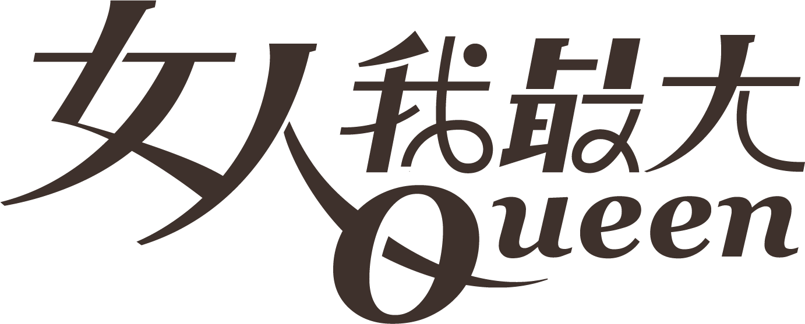

最好的保養，也許不是哪一支精華，而是你願意每天空出來、好好對待自己的那段時間。
「療癒儀式」談的，是把保養從一件待辦事項，變回一段可以期待的時間。當白天的步調太快，夜裡這十幾分鐘，反而成了少數能完全屬於自己的空檔。
這股轉變並不是憑空出現的。當「忙」成為一種日常，身體其實一直在等一個可以鬆下來的訊號；比起再多一道保養步驟，現代人更需要的，是一個能把自己從外界切換回來的開關。
而這個開關，往往藏在感官裡。一段熟悉的香氣、一個固定的動作順序、洗去整日疲憊的那一刻水溫，都會被身體記成「可以休息了」的提示。久而久之，光是開始這套流程，緊繃就已經先放下了一半。
儀式感不在於買了多貴的東西，而在於那些被刻意保留下來的小步驟：洗去一天的疲憊、讓香氣慢慢散開、用指腹替自己鬆開緊繃。動作本身不難，難的是願意每天為自己重複一次。
現代女性需要的不是抗老產品，是抗焦慮的儀式。當這一刻屬於自己，肌膚自然也願意回應。
有趣的是，當保養被當成「照顧自己」而不是「修正缺點」，效果反而更容易被感受到。因為你不再盯著鏡子找問題，而是把注意力放回身體當下的舒服與放鬆。
心理學把這種固定而可預期的小流程，稱為「過渡儀式」：它幫助人從一個狀態，平順地走進下一個。睡前保養之所以讓人安心，正是因為它替混亂的一天，畫上了一個清楚的句點。
要建立屬於自己的儀式，其實不需要一次到位。可以從最小的一步開始，也許只是睡前認真卸一次妝、或在枕邊噴上喜歡的香氣；當這一步變得自動，再慢慢往上疊。重點從來不是步驟多寡，而是那份「我願意為自己停下來」的心意。
也因為如此，這股趨勢挑選產品的標準悄悄改變了。能不能融進日常、用起來是否令人放鬆、香氣與觸感是否讓人想一再回到，都比成分表上的數字更被在意。
這也是為什麼，越來越多人開始把睡前保養當成一天的收尾儀式。它不保證隔天立刻容光煥發，但它確實讓人在那個當下，覺得自己被好好對待了。而這份被善待的感覺，或許才是「療癒儀式」真正想留下的東西。
延伸閱讀 · 本趨勢最多 6 篇
TVBS 女人我最大 · 2026